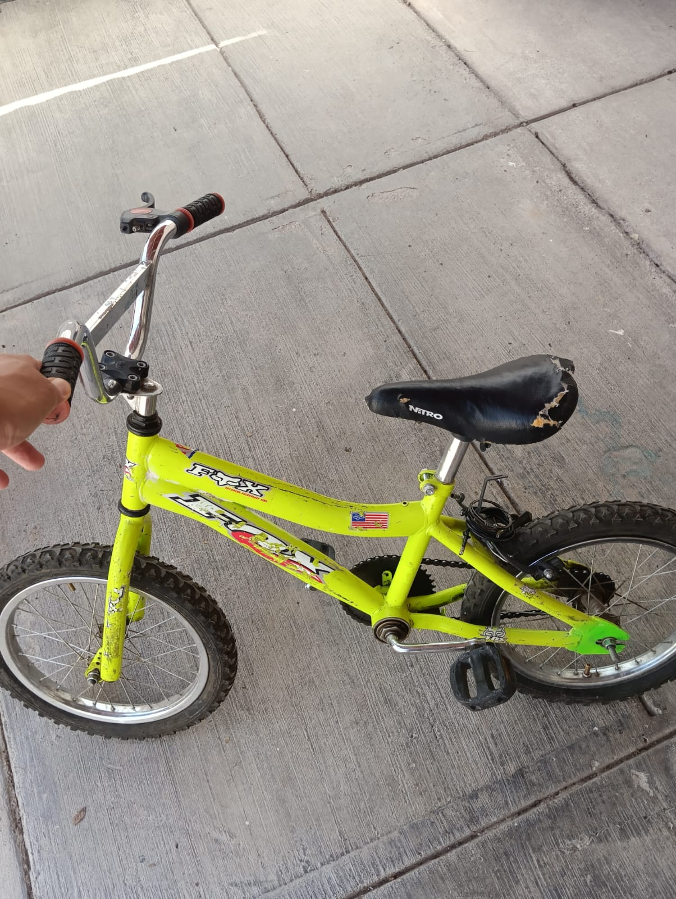
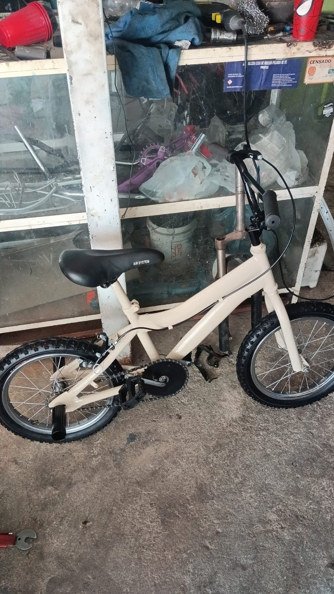

En El Unicornio Azul, somos apasionados por la reparación y venta de bicicletas, y nos dedicamos a ofrecer servicios de reparación y mantenimiento de alta calidad.
Nuestro equipo de expertos está comprometido en brindar un servicio excepcional para que tu bicicleta esté siempre en óptimas condiciones.
Con años de experiencia en la industria, hemos construido una reputación sólida por nuestra atención al detalle y nuestro compromiso con la satisfacción del cliente.
¡Confía en nosotros para cuidar de tu bicicleta como si fuera nuestra!
Brindar a nuestros clientes bicicletas, refacciones y servicios de reparación de buena calidad, ofreciendo soluciones accesibles y confiables que permitan prolongar la vida útil de cada bicicleta.
Ser la agencia de bicicletas líder en la región, reconocida por la excelencia en la reconstrucción y mantenimiento de bicicletas, innovando continuamente para ofrecer experiencias únicas.

